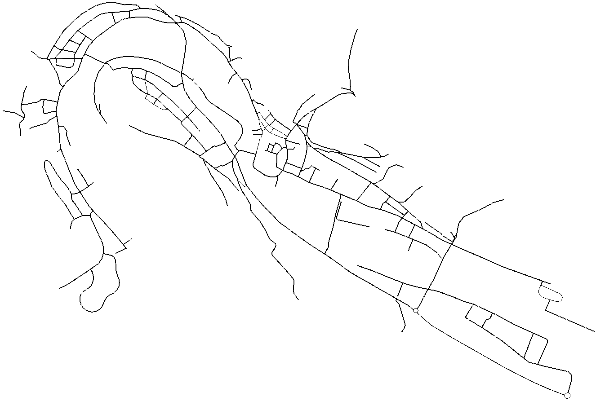

ネットワーク/SUMO道路ネットワーク¶

sumo-guiで開いたSUMO netファイルのスクリーンショット。 この地図ではドイツのEichstättが示されています。
| SUMO道路ネットワーク | |
|---|---|
| 拡張子 | .net.xml |
| コンテンツタイプ | マップ |
| オープンなフォーマットか | はい |
| SUMO特有か | はい |
| XMLスキーマ | [net_file.xsd] |
SUMOネットワークファイルはマップの交通に関係する部分、車両が通過する道路と交差点を表現しています。 大まかに見れば、SUMOネットワークは有向グラフです。 ノードはSUMOでは一般に「分岐」と呼ばれ、交差点を表現し、エッジは道路を表現します。 エッジは一方向なことに注意してください。 具体的には、SUMOネットワークは以下の情報を含んでいます。
- 座標、形状、速度制限を含んだ車線の集合としての道路 (エッジ)
- 分岐で参照される交通信号のロジック
- 優先通行権を含んだ分岐
- 分岐(ノード)と車線の結合
入力フォーマットや処理のオプションによっては、次も含まれることがあります。
- 地区
- ラウンドアバウトの説明
人間が読める形式 (XML) ではありますが、手作業で修正するものではありません。 [SUMO XML説明ファイル]を[NETCONVERT]と共に使うべきです。 様々なフォーマットで作られたマップを[NETCONVERT]を用いて変換したり、地理的に単純な抽象化されたマップを[NETGENEATE]を用いて生成することもできます。 すでにある.net.xml-fileを編集するには、[NETCONVERTにパッチと共にロードする]、あるいは、自身の道路ネットワークを作成するか、[NETCONVERT]または[NETGENEATE]によって生成されたファイルを再編集するために、[NETEDIT]を用いることができます。
警告
SUMOネットワークをカスタムした入力データから作成する場合の推奨手段は、[平易なxmlファイル]を作成、生成して、[NETCONVERT]を用いてそれらを.net.xmlに変換する方法です。 [.net.xmlファイルを直接編集する方法は危険]です。
ネットワークフォーマット¶
SUMO道路ネットワークはXMLファイルでエンコードされています。 コンテンツは次の順序で実態がグループ化されています。
| 名前 | タイプ | 説明 |
|---|---|---|
| netOffset | offset ([<2D-POSITION>]) | ネットワークを (0, 0) へ移動させる際のオフセット |
| convBoundary | boundary ([2D-BOUNDING_BOX]) | |
| origBoundary | boundary ([2D-BOUNDING_BOX]) | |
| projParameter | projection parameter | ネットワークの投影に関する情報 |
projParameterは次のいずれかの値をとります:
| エンコード | 説明 |
|---|---|
| '!' | 投影は適用されません |
| '-' | 「単純な」投影が適用されます |
| '.' | ? |
| proj-definition () |
SUMOから受けとったx/y座標から元の座標を復元するには、まずネットワークのオフセットを引く必要があります。
次に、projParameterに関して最初とは逆の投影を適用する必要があります。
投影されたネットワークでは、逆の変換をするproj関数であるpj_invを用いることができます。
Position2D cartesian = sumoXY(x, y);
projPJ myProjection = pj_init_plus(projParameter.c_str());
cartesian.sub(netOffset);
projUV p;
p.u = cartesian.x();
p.v = cartesian.y();
p = pj_inv(p, myProjection);
p.u *= RAD_TO_DEG;
p.v *= RAD_TO_DEG;
cartesian.set(p.u, p.v);
投影がなされていないネットワーク (projParameter = '!') では、オフセットのみを適用する必要があります。
「単純な」投影 (projParameter = '-') に関しては、現在逆投影の方法は知られていません。
SUMO道路ネットワークは北に向けて揃えられることになっています。 もちろん、 しかし、Open Street Mapやshapeファイルからインポートした場合、上方向が北に対応します。
エッジとレーン¶
"plain"と"internal"なエッジ
接続¶
平易な接続¶
平易な接続、あるいは「リンク」は、出発する車線がどの到着する車線から到達できるかを表現しています。 加えて、交差点を通過する最初の車線も与えられます。 追加情報は接続の方向と「状態」を表現します。 接続が信号によって制御されている場合、信号の名前と、信号定義内でその接続をコントロールする信号現示のインデックスが与えられます。 接続は次のようにエンコードされます。
<connection from="<FROM_EDGE_ID>" to="<TO_EDGE_ID>" fromLane="<FROM_LANE_INDEX>" toLane="<TO_LANE_INDEX>"
via="<VIA_LANE_ID>" tl="<TRAFFIC_LIGHT_ID>" linkIndex="12" dir="r" state="o"/>
ラウンドアバウト¶
ネットワーク内のラウンドアバウトは通行権に影響します (ネットワーク生成内の分岐の[Requests] <request>要素にエンコードされています)。
ネットワークファイル内に存在することについては、2つの理由があります。
- .net.xml-fileを[NETCONVERT]で再インポートすることが楽になる
- 車線変更をするモデルがラウンドアバウトを考慮するようになる
ラウンドアバウトは (幾分冗長に) ノードとエッジを用いて定義されています。
<roundabout nodes="nodeID1 nodeID2 ..." edges="edgeID1 edgeID2 ..."/>
生成、編集、可視化のためのソフト¶
SUMOネットワークファイルの作成には、他のフォーマットからなら[NETCONVERT]を、単純な
より進んだドキュメント¶
- ネットワークのインポート
- [XMLとNETCONVERTを用いたネットワークの定義]
- [NETCONVERTを用いた他のアプリケーションからのネットワークのインポート]
- [NETCONVERT]マニュアル
- 抽象的道路ネットワークの生成
- [NETGENEATEを用いた抽象的ネットワークの生成]
- [NETGENEATE]マニュアル
- [NETEDIT]マニュアル
- [開発者向け/ネットワーク生成プロセス]
!!! note '注意' 旧バージョンの[NETCONVERT]/[NETEDIT]で生成されたネットワークを扱う場合は、[ChangeLog]を参照してください。